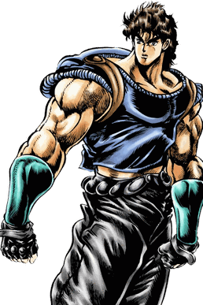
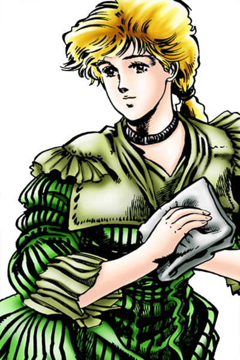
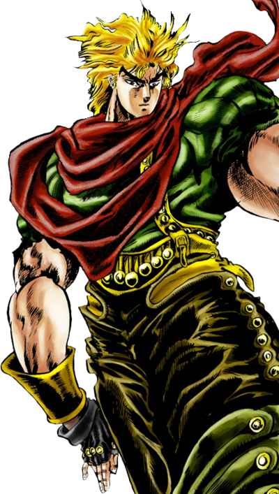
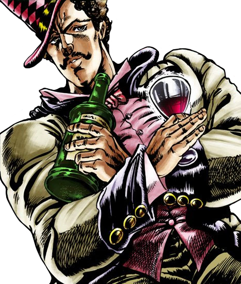
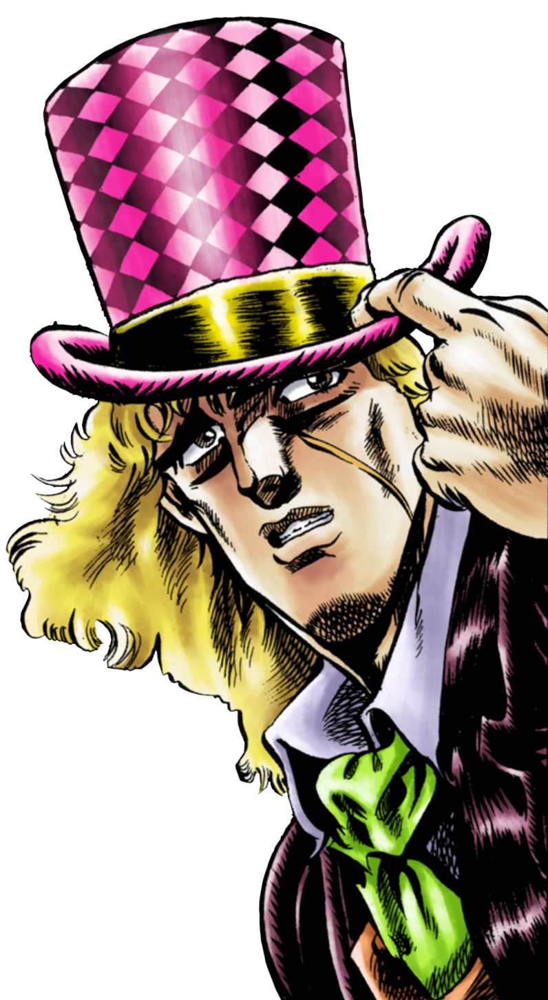

Part 1
Phantom Blood
A battle of bloodlines, honor, and the rise of a terrifying vampire.
The beginning of the Joestar story
Jonathan Joestar begins life as a noble-hearted young man whose bond with his adopted brother Dio Brando is shattered by jealousy and cruelty. What starts as a family conflict becomes a dark, escalating struggle that changes the course of the Joestar legacy.
This part introduces the roots of the series: a warrior's code, the power of Hamon, and a long-standing feud that will echo through the generations to come.
The original story
Manga
Phantom Blood began Hirohiko Araki's JoJo's Bizarre Adventure manga in 1986. Its the introduction to the Joestar family story while also establishing the most pivotol villain in the series: Dio Brando.
The screen adaptation
Anime
David Production's television adaptation premiered in 2012. The first nine episodes adapt Phantom Blood, bringing Jonathan and Dio's story to a new audience.
Real-world milestones
The story did not cause historical events, but it has had several notable real-world releases:
- 1986: The manga began publication in Weekly Shonen Jump, launching the JoJo series.
- 2007: A theatrical animated film adaptation of Phantom Blood was released in Japan.
- 2012: The television anime adaptation premiered, bringing Jonathan and Dio's story to anime audiences.
Characters
Jonathan Joestar

The noble heir and Hamon warrior who protects his family and fights Dio Brando.
Erina Pendleton

Jonathan's childhood friend and the woman who becomes his wife and lifelong companion.
Dio Brando

Jonathan's adopted brother and a ruthless antagonist who becomes a vampire.
Will A. Zeppeli

A Hamon master who trains Jonathan for his battle against Dio and the undead.
Robert E. O. Speedwagon

A former Londoner who becomes one of Jonathan's closest and most loyal allies.